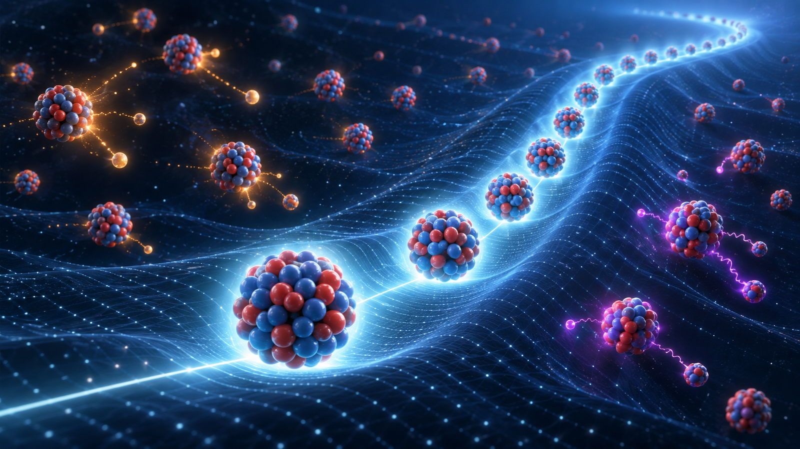
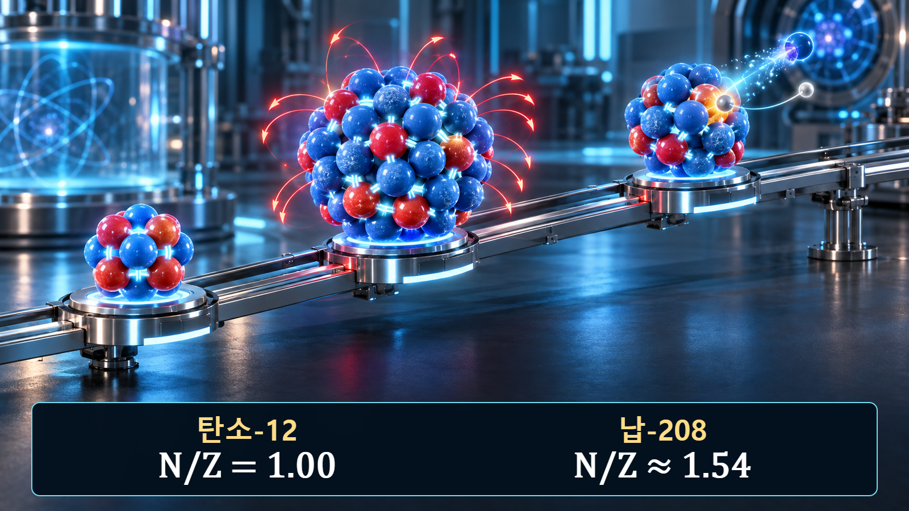
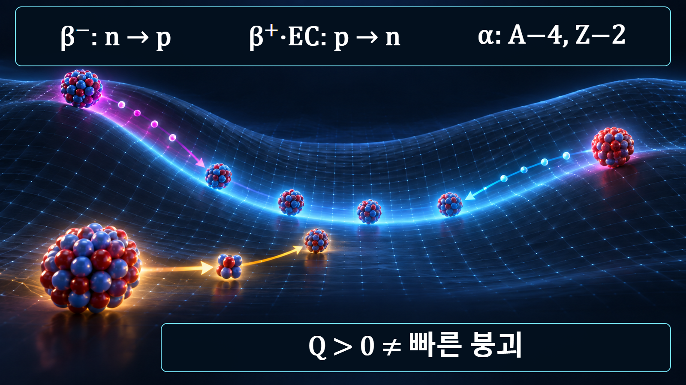

핵물리 기초 · 011
안정핵과 불안정핵
중성자와 양성자의 균형이 만드는 안정성

안정핵은 현재 알려진 자발적 방사성붕괴가 관측되지 않는 핵종이며, 불안정핵은 더 낮은 에너지상태로 갈 수 있어 고유한 확률로 붕괴하는 핵종입니다. 안정성은 원자의 화학적 안정성과 구별해야 합니다.
핵 안정성의 물리적 의미
원자핵 안에서는 양성자와 중성자를 가까이 묶는 강한 핵력과 양성자끼리 밀어내는 전기적 쿨롱힘이 경쟁합니다. 핵력이 모든 핵자를 무한히 묶는 것은 아닙니다. 핵력은 매우 짧은 거리에서 작용하고 포화되는 반면, 쿨롱반발은 양성자수가 늘수록 누적됩니다. 어떤 핵종이 총 질량-에너지를 보존하면서 더 낮은 총에너지의 딸핵과 방출입자로 바뀔 수 있고 그 전이가 양자역학적으로 허용되면 불안정할 수 있습니다.
가벼운 핵과 무거운 핵의 중성자 비율
가벼운 안정핵에서는 중성자수 N과 양성자수 Z가 대체로 비슷합니다. 그러나 Z가 커지면 쿨롱반발을 완화하면서 핵력을 더 제공하는 중성자가 상대적으로 많이 필요합니다. 탄소-12는 Z=6, N=6으로 안정하지만 납-208은 Z=82, N=126으로 N/Z≈1.54입니다. 따라서 안정성을 N=Z라는 한 줄 규칙으로 판정하면 무거운 핵종을 잘못 해석하게 됩니다.

에너지 관점의 붕괴 가능성
붕괴 전후의 질량차이는 Q=(m모핵−m생성물)c2로 에너지 방출 가능성을 나타냅니다. 여기서 m생성물은 딸핵과 모든 방출입자의 정지질량 합계이며, 전후에 일관된 질량 기준을 적용합니다. 전자포획처럼 입사 전자가 참여하면 그 정지질량도 초기계에 포함해야 하므로 해당 반응에 맞는 질량수지를 사용합니다. Q가 양수라는 사실은 전이가 에너지상 가능하다는 뜻이지만, 곧바로 빠르게 붕괴한다는 뜻은 아닙니다. 각운동량과 패리티 선택규칙, 쿨롱장벽, 약한 상호작용의 세기 때문에 가능한 붕괴도 매우 느릴 수 있습니다. 반감기는 이러한 전이확률이 시간에 누적된 결과입니다.
탄소-12와 탄소-14의 비교
탄소-12는 양성자 6개와 중성자 6개를 가지며 안정합니다. 탄소-14는 양성자 6개와 중성자 8개로 중성자가 상대적으로 많습니다. 탄소-14의 중성자 하나가 베타마이너스붕괴로 양성자로 바뀌면 질소-14가 되고, Z는 6에서 7로, N은 8에서 7로 변하지만 A=14는 유지됩니다. 이 변화는 핵종을 안정 영역 쪽으로 옮기며 약 5,700년의 긴 반감기는 에너지 가능성과 붕괴속도가 서로 다른 질문임을 보여줍니다.
안정 영역을 향하는 대표 경로
중성자가 지나치게 많은 핵종은 베타마이너스붕괴로 N을 하나 줄이고 Z를 하나 늘리는 경향이 있습니다. 양성자가 지나치게 많은 핵종은 베타플러스붕괴나 전자포획으로 Z를 줄이고 N을 늘릴 수 있습니다. 매우 무거운 핵에서는 알파붕괴로 A가 4, Z가 2 감소하거나 자발핵분열이 일어날 수 있습니다. 실제 주된 경로와 분기비는 질량평가, 에너지준위와 측정된 붕괴자료로 확인해야 합니다.

안정·불안정 판정에 필요한 자료
핵종도에서 안정선과의 거리는 유용한 첫 단서이지만 판정의 전부가 아닙니다. 실제 분석에서는 원자질량, Q값, 반감기, 붕괴방식, 분기비와 딸핵의 에너지준위를 함께 봅니다. 같은 원소의 동위원소라도 반감기가 크게 다르고, 준안정상태처럼 핵 조성은 같지만 에너지상태가 다른 경우도 있습니다.
| 확인 항목 | 알 수 있는 내용 | 단독 판정의 한계 |
|---|---|---|
| N/Z와 핵종도 위치 | 안정 영역과의 조성 차이 | 붕괴속도를 직접 주지 않습니다. |
| Q값 | 전이의 에너지 가능성 | 선택규칙과 장벽을 포함하지 않습니다. |
| 반감기·분기비 | 속도와 경쟁 경로 | 측정·평가자료의 불확실성을 확인해야 합니다. |
원자력공학의 실제 적용
원자로가 정지한 뒤에도 핵분열생성물과 방사화생성물이 붕괴하면서 열과 방사선을 냅니다. 어떤 핵종이 생성되고 얼마나 빨리 줄어드는지를 알아야 붕괴열 제거, 차폐, 작업자 피폭, 사용후핵연료 저장과 폐기물 관리 조건을 계산할 수 있습니다. 예를 들어 짧은 반감기 핵종은 초기 선원항에 크게 기여할 수 있고, 세슘-137이나 스트론튬-90처럼 수십 년 규모의 핵종은 중장기 저장과 환경평가에서 중요합니다.
안정성 설명의 한계
결합에너지가 크다는 표현만으로 안정성을 완전히 설명할 수 없습니다. 핵 전체의 결합에너지, 핵자당 결합에너지, 특정 입자를 떼어내는 분리에너지와 붕괴 Q값은 서로 다른 양입니다. 또한 ‘안정’은 절대적으로 변하지 않는다는 철학적 표현이 아니라 현재의 관측 한계와 알려진 붕괴채널을 기준으로 한 핵자료상의 분류입니다. 정밀 계산에서는 최신 평가핵자료의 버전과 불확실성을 기록해야 합니다.
핵심 정리
핵 안정성은 핵력과 쿨롱반발, 중성자·양성자 조성, 질량차이와 양자역학적 전이확률이 함께 정합니다. N/Z는 경향을 보여주고 Q값은 가능성을 알려주며 반감기와 분기비는 실제 시간척도와 경로를 제공합니다. 이 세 수준을 구분하면 핵종도, 붕괴사슬과 원자로 선원항 계산을 일관되게 이해할 수 있습니다.